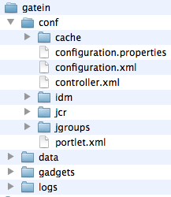
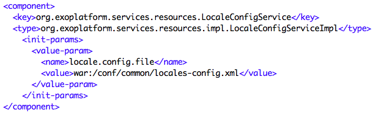

Configuration and Extensions
Basic Customization
1Folder Structure
2Configuration
3Extension Concept
4Service Configuration
Folder Structure
Folder Overview
- Standard tomcat, but enhanced
- jars in tomcat/lib
- wars in tomcat/webapps
- declarations in conf/Catalina/
- modified conf/server.xml
- modified conf/jaas.config
- start_eXo file
- bin/gatein file
- new gatein folder
WebApps
- About 40 webapps
- Several webapps per project
- The webapps that are extensions are also declared in conf/Catalina/localhost/
Gatein Folder

- Configuration
- Data
- Index
- Logs
Data Folder
- HSQL database
- Index
- Swap
- Values
- Binary Data that is not stored in the database
- JTA
Configuration
A short Introduction
External Configuration
- tomcat/gatein/conf/ and subfolders
- Highest Priority
- tomcat/gatein/conf/configuration.properties for SysAdmin properties
Configuration Properties
- tomcat/gatein/conf/configuration.properties
Configuration Properties
- Boost eXo and augment the cache liveTimes !
- liveTimes are seconds: 600s = 10min
Datasource
- The datasource is managed by the application server (tomcat)
- eXo accesses the datasources using JNDI lookup
- IDM : Identity Management (Organization: Users and Groups)
Datasource
- In tomcat/conf/server.xml is the JNDI Resource configuration
- Remarks
- At the first startup the tables are created
- The provided user has to have permissions for table creation
- After the first startup the permission can be removed
Controller
- New concept since eXo Platform 3.5
- URL composition
- "/portal/" cannot be altered or removed
- tomcat/gatein/conf/controller.xml
Exercise: Configuration
- Controller
- Find where the language is defined in controller.xml
- Test out French: http://localhost:8080/portal/fr/acme/
- Test out group pages with a “lang” parameter
- Stop the server
- Boost eXo Cache
- Open tomcat/gatein/conf/configuration.properties
- Search for liveTime=600 and set them to 99000
- Start the server
- Extra: Modify user the page pattern in controller.xml
- Extra: If you have a database on hand create, modify tomcat/conf/server.xml in order to point to your database
Extension Concept
A War + Activation Jar
Reason
- Support
- Avoids modifying source code in eXo deliveries
- No support from eXo for modified code
- Advantages
- Easy migration to new version
- Easy application of patches from eXo support
- Clear limit between eXo’s code and customer’s code
- Like a PlugIn that you re-apply after each migration
Concept
- Allows to customize
- HTML, CSS, Javascript, JSP
- Groovy Templates
- Configuration
- Internationalization
- A war file
- Contains all customization files
- You can overwrite/replace files contained in other wars
- Use the exact same path and name
- An activation jar
- Declares your war as eXo extension
War Project
- Customizations
- Put all your customizations in a war file
- If you wish to override, use the exact same path and file name
- web.xml
- Define the name of your extension in the tag "display-name"
- The name of the war file does NOT matter
- Declare the listener PortalContainerConfigOwner
bike-extension
org.exoplatform.container.web.PortalContainerConfigOwner
Activation JAR
- configuration.xml
- The JAR contains exactly one file in the folder "/conf"
- Name: configuration.xml
- Activate the war
- Service: org.exoplatform.container.definition.PortalContainerConfig
- Point to the name of the extension, defined in the web.xml tag "display-name"
<object type="org.exoplatform.container.definition.PortalContainerDefinitionChange$AddDependencies">
bike-extension
</object>
Deployment
- Tomcat
- Stop tomcat
- Copy the jar to tomcat/lib
- Copy the war to tomcat/webapps
- Tomcat loading order
- You extension must be load before the starter.war
- To ensure this declare your extension
- Declare the bike-extension in tomcat/conf/catalina/localhost/
- JBoss
- In JBoss, create a ear containing the war and jar and deploy it
Test
- Testing
- After copying the war and jar you can test the extension
- Restart tomcat
- When re-deploying a modified war, stop tomcat, delete the war folder in tomcat/webapps and restart
Extension Exercise
A War + Activation Jar
Extension Exercise Overview
- In this exercise you will
- Modify the Admin Tool Bar
- Alter the login interface
- Add a language
- Maven
- Go to the folder with pom.xml and execute "mvn clean install"
- If you are online maven will download a lot of files
- Alternatively you can use the provided repository
Admin Tool Bar Configuration
- Current Admin Tool Bar configuration:
- webapps\platform-extension\WEB-INF\conf\portal\portal\sharedlayout.xml
- Overriden in your extension:
- bike-extension\WEB-INF\conf\portal\portal\sharedlayout.xml
- In “sharedlayout.xml“:
- definition of several portlets
- each entry in the Admin Tool Bar is a small portlet
- The file configures the order of these entries in the tool bar
Admin Tool Bar Configuration
Admin Tool Bar Configuration
Maven Offline Repository
- Install Maven
- Open a shell
- Open the project file "…/exercises/custom-extension/1-project"
- Execute "mvn clean" in the shell
- There will be errors (if you are offline),
- If you are online, there will be downloads,
- If you wish to work without downloads, you should stop the execution.
- Use the prepared Maven repository
- Copy maven-repository.zip to §HOME/$username/.m2/
- Rename (or delete) the existing folder named "repository"
- Unzip maven-repository.zip
- Execute "mvn clean" in the shell
- No more errors or downloads, because the delivered repository is used
Exercise: Custom Extension 1/3
- Open exercise …/custom-extension/
- Copy the sharedlayout from the webapps/platform-extension
- exercises/custom-extension/1-project/war/src/main/webapp/WEB-INF/conf/portal/portalWEB-INF/conf/portal/portal/sharedlayout.xml
- Change the order of the portlets in the Admin Tool Bar
- Move the container around the dashboard portlet after the container of the edit portlet
- .../exercises/custom-extension/1-project/war/src/main/webapp/WEB-INF/conf/portal/portal/sharedlayout.xml
- In order to be faster, integrate the next two customizations before compiling and starting eXo
Exercise: Custom Extension 2/3
- Use the same project folder:
- .../custom-extension/1-project/war/src/main/webapp
- Create your own version of the jsp file
- Copy tomcat/webapps/platform-extension\login\jsp\login.jsp to your project (path: exercises/custom-extension/1-project/war/src/main/webapp/login/jsp)
- Add “Welcome to the Bike Shop” to the jsp
- Remember: You have to copy login.jsp to the exact same path in your bike-extension
Exercise: Custom Extension 3/3
- Copy
- .../tomcat/webapps/portal/WEB-INF/conf/common/locales-config.xml to exact .../exercises/custom-extension/1-project/war/src/main/webapp/WEB-INF/conf/common/locales-config.xml
- Add Afrikaans language (“af“) to locales-config.xml
Exercise: Deploy and Test!
- Open .../exercises/custom-extension/1-project and execute "mvn clean install"
- Copy
- Copy the compiled war (.../1-project/war/target/bike-extension.war) to the tomcat/webapps folder
- Copy the compiled jar (.../1-project/config/target) file to the tomcat/lib folder
- Declare the webapp in the tomcat/conf/catalina/localhost/ folder
- Start eXo
- Test !
- At login you should see the modified login.jsp (http://localhost:8080/portal/private/acme/)
- After login you should see modified Admin Tool Bar
- Click on change language and you should see Afrikaans in the list
Services
Introduction
- Services are java classes with a defined API
- Services are deployed to the tomcat/lib folder
- A service can have a default configuration
- In the jar: /conf/configuration.xml
Service Keywords
- Inversion of Control
- eXo uses the PicoContainer framework
- In PicoContainer services are referenced as "Components"
- eXo Container (based on a PicoContainer)
- Reads the configuration files and creates exactly one instance of each service (singleton pattern)
- The consumer of a service
- Does not create an instance (... new myService())
- Calls the exoContainer to provide a reference to the requested service
Service Keywords
- Interface – Implementation
- A service is defined by the java interface
- A service can have different implementations
- Only one implementation can be used during runtime
- The configuration files define which implementation is used
- Singleton
- Each service is created only once (new myService())
- The exoContainer holds the reference to this instance
- When requested, the consumer receives the reference
Service Configuration
- To declare a service to the eXo Container
- you must add an xml configuration to a specific place
- jar, webapp or external configuration
- eXoContainer reads the files named "configuration.xml"
- These files contain very often imports of other configuration files
Configuration Priority
- Default configuration inside of jar files
- /conf/portal/configuration.xml
- Webapp configuration inside of war files
- /WEB-INF/conf/configuration.xml
- External configuration
- /tomcat/gatein/conf/portal/portal/configuration.xml
- The external configuration overwrites everything
- The configuration.xml files are read automatically
- A configuration.xml can import other configuration files
Service Configuration
- The registration of a service
- done with the <component> elements
- You have to define a service, otherwise the service is not known by the eXoContainer
- Interface: defined by <key>
- Implementation: defined by <type>
- Example
- tomcat/webapps/portal/web-inf/conf/mail/portal-mail-configuration.xml
Service Reference
- A service is always referenced by its interface (<key>), not by the implementation (<type>)
- Example
- tomcat/webapps/portal/web-inf/conf/mail/portal-mail-configuration.xml
Configuration Parameters
- A service can be configured using parameters
- Each services defines the parameters it interpretes

Configuration Plugin
- Services can provide plugins
- Methods of the service
- Allows to add configuration without repeating the other configuration
Configuration Profiles
Configuration Profiles
- Each profile activates certain configurations
- Java System Variable exo.profiles
- Example in start_eXo.sh:
- Several profiles can be activated at the same time using a comma
Configuration Profiles
- Any part of the configuration can be added to a profile
- Profile-dependent configuration is only taken into account if the profile is used
- A profile can depend on a list of profiles. In this case, the use of any profile activates the configuration
Configuration and Extensions
Basic Customization